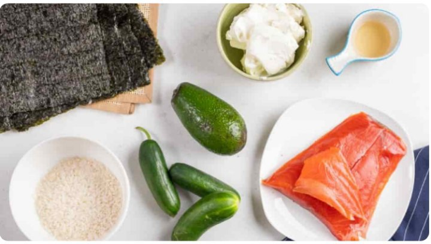
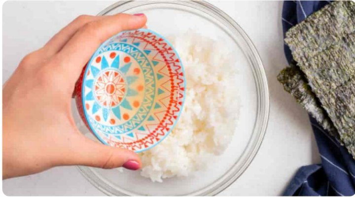
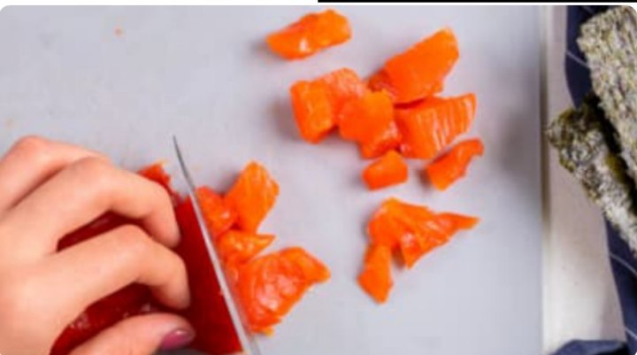
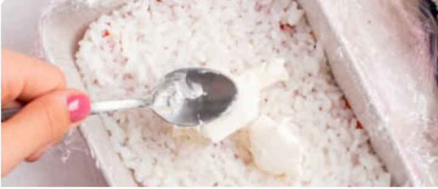
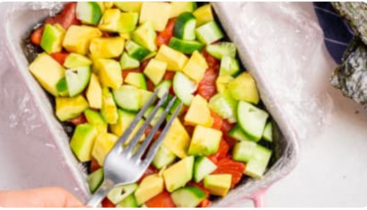
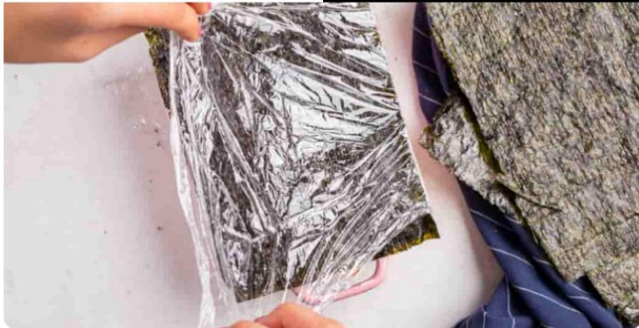

Agar roll o’ragani vaqtingiz bo’lmasa yoki erinsangiz, bu tez «Filadelfiya» rollari tayyorlash usulini taqdim etamiz. Ta’bga ko’ra masalliqlarni o’zgartirish, va yangi ta’mlar hosil qilish mumkin.
Barcha masalliqlarni tayyorlaymiz.
Idishda guruch sirkasi, shakar va tuzni aralashtiramiz.
Guruchni yaxshilab yuvib, pishiramiz. Sirkali aralashmani qo’shib, aralashtiramiz va sovutamiz.
Losos balig’i, bodring va avokadoni mayda kubik shaklida to’g’raymiz.
15 sm diametrlik qolipga, chetlari chiqib turadigan qilib, ozuqa plyonkasini solamiz.
Masalliqlarni qavat-qavat solamiz: losos, guruch, tvorogli pishloq, nori qog’ozi, losos, bodring, avokado, guruch, tvorogli pishloq va nori qog’ozi.
Kesayotganda buzilib ketmasligi uchun, barcha masalliqlarni yaxshilab bosib joylashtirish kerak.
Plyonka chetlarini o’rab, 30 daqiqaga sovutgichga qo’yamiz.
Tayyor sushi-tortni tarelkaga oylantirib tushirib, plyonkasini yechamiz. Dasturxonga tortishdan oldin kunjut bilan bezatamiz.